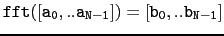

suivant: Un exercice utilisant fft
monter: Transformée de Fourier
précédent: La transformée de Fourier
Table des matières
Index
L'inverse de la transformée de Fourier rapide : ifft
ifft a comme argument une liste
![$ \tt [b_0,..b_{N-1}]$](img329.png) où
N est une puissance de deux.
où
N est une puissance de deux.
ifft renvoie la liste
![$ \tt [a_0,..a_{N-1}]$](img328.png) tel que :
tel que :
.
On tape :
ifft([2,-1-i,0,-1+i])
On obtient :
[0.0, 1.0, 1.0, 0.0]
Comme pour la fft, on peut travailler sur un corps fini en
indiquant une
racine N-ième primitive de l'unité en 2ième argument
et p en 3ième argument de fft.
Documentation de giac écrite par Renée De Graeve